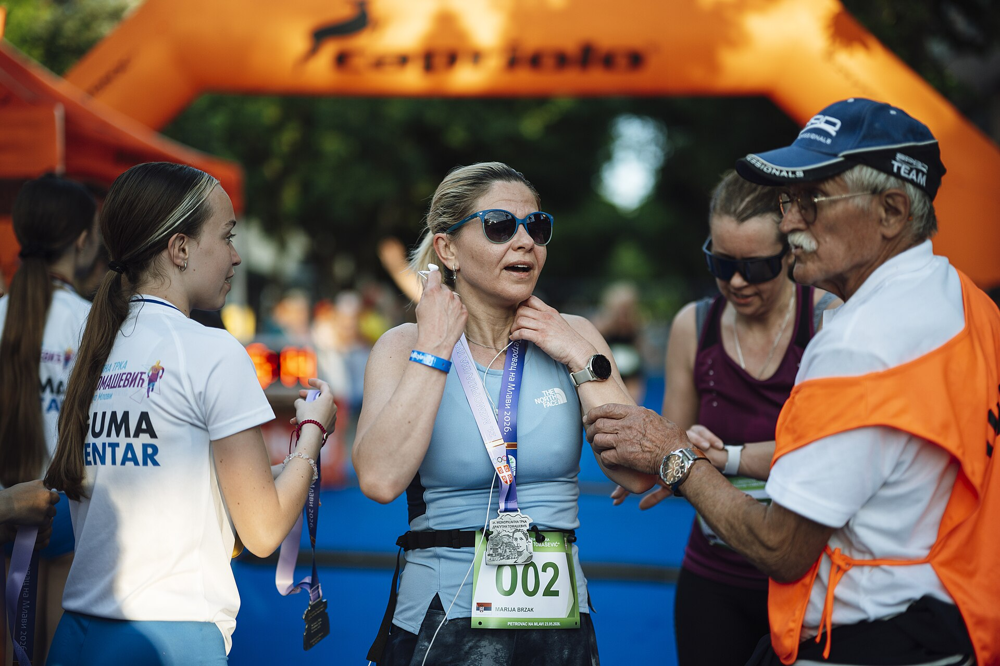

Accueil des participants
Ouverture du village, retrait des dossards et orientation vers les espaces dédiés.
LE JOUR J
Un déroulé prévisionnel pour profiter de chaque temps fort, du retrait des dossards à la remise des prix symbolique.
DÉROULÉ INDICATIF
Les horaires ci-dessous sont proposés à titre d'exemple et pourront être ajustés selon les contraintes du site et de l'organisation.

Ouverture du village, retrait des dossards et orientation vers les espaces dédiés.
Préparation physique douce et consignes de sécurité avant le départ.
Lancement du parcours challenge pour les coureurs inscrits sur cette distance.
Départ du parcours découverte, ouvert aux débutants et aux participants souhaitant courir à leur rythme.
Accueil à l'arrivée, point d'hydratation et animations autour de la pratique sportive.
Bilan de la matinée, remerciements aux bénévoles et mise en avant de l'association partenaire.